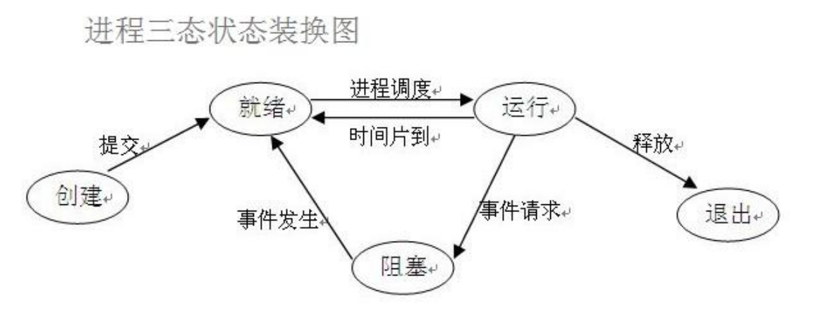
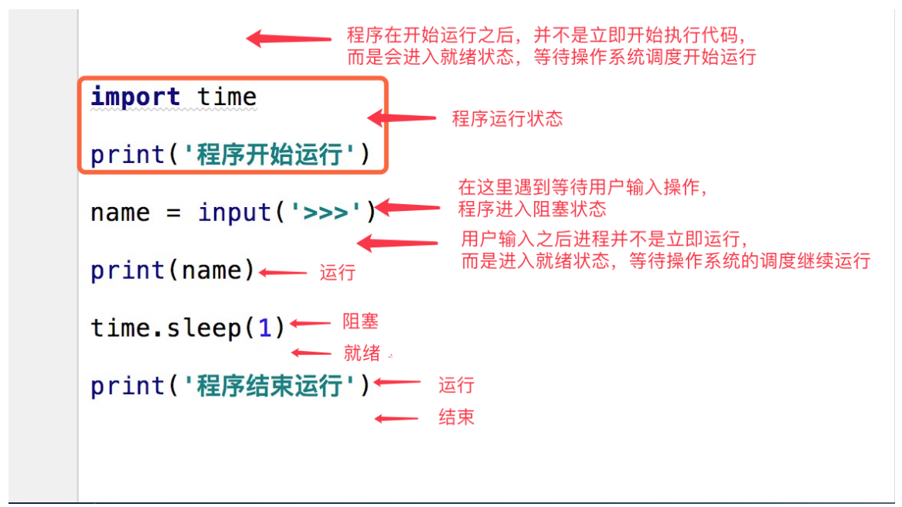

什么是进程? 进程（Process）是计算机中的程序关于某数据集合上的一次运行活动，是系统进行资源分配和调度的基 本单位，是操作系统结构的基础。在早期面向进程设计的计算机结构中，进程是程序的基本执行实体； 在当代面向线程设计的计算机结构中，进程是线程的容器。程序是指令、数据及其组织形式的描述，进 程是程序的实体。
狭义定义：进程是正在运行的程序的实例（an instance of a computer program that is being executed）。
广义定义：进程是一个具有一定独立功能的程序关于某个数据集合的一次运行活动。它是操作系统动态 执行的基本单元，在传统的操作系统中，进程既是基本的分配单元，也是基本的执行单元。
进程是一个实体。每一个进程都有它自己的地址空间，一般情况下，包括文本区域（text region）、数据区域（data region）和堆栈（stack region）。文本区域存储处理器执行的代码； 数据区域存储变量和进程执行期间使用的动态分配的内存；堆栈区域存储着活动过程调用的指令和 本地变量。
进程是一个“执行中的程序”。程序是一个没有生命的实体，只有处理器赋予程序生命时（操作系统 执行之），它才能成为一个活动的实体，我们称其为进程。 进程是操作系统中最基本、重要的概念。是多道程序系统出现后，为了刻画系统内部出现的动态情 况，描述系统内部各道程序的活动规律引进的一个概念,所有多道程序设计操作系统都建立在进程的 基础上。
进程的特性
动态性：进程的实质是程序在多道程序系统中的一次执行过程，进程是动态产生，动态消亡的。
并发性：任何进程都可以同其他进程一起并发执行
独立性：进程是一个能独立运行的基本单位，同时也是系统分配资源和调度的独立单位；
异步性：由于进程间的相互制约，使进程具有执行的间断性，即进程按各自独立的、不可预知的速度向前推进
结构特征：进程由程序、数据和进程控制块三部分组成。
多个不同的进程可以包含相同的程序：一个程序在不同的数据集里就构成不同的进程，能得到不同的结 果；但是执行过程中，程序不能发生改变
程序是指令和数据的有序集合，其本身没有任何运行的含义，是一个静态的概念。
而进程是程序在处理机上的一次执行过程，它是一个动态的概念。
程序可以作为一种软件资料长期存在，而进程是有一定生命期的。
程序可以作为一种软件资料长期存在，而进程是有一定生命期的。
进程调度 扩展阅读
要想多个进程交替运行，操作系统必须对这些进程进行调度，这个调度也不是随即进行的，而是需要遵 循一定的法则，由此就有了进程的调度算法。
先来先服务（FCFS）调度算法
短作业（进程）优先调度算法（SJ/PF）是指对短作业或短进程优先调度的算法，该算法既可用于作业调 度，也可用于进程调度。但其对长作业不利；不能保证紧迫性作业（进程）被及时处理；作业的长短只是 被估算出来的。
时间片轮转(Round Robin，RR)法
时间片轮转(Round Robin，RR)法的基本思路是让每个进程在就绪队列中的等待时间与享受服务的时间 成比例。在时间片轮转法中，需要将CPU的处理时间分成固定大小的时间片，例如，几十毫秒至几百毫 秒。如果一个进程在被调度选中之后用完了系统规定的时间片，但又未完成要求的任务，则它自行释放自 己所占有的CPU而排到就绪队列的末尾，等待下一次调度。同时，进程调度程序又去调度当前就绪队列中 的第一个进程。
显然，轮转法只能用来调度分配一些可以抢占的资源。这些可以抢占的资源可以随时被剥夺，而且可以将 它们再分配给别的进程。CPU是可抢占资源的一种。但打印机等资源是不可抢占的。由于作业调度是对除 了CPU之外的所有系统硬件资源的分配，其中包含有不可抢占资源，所以作业调度不使用轮转法。 在轮转法中，时间片长度的选取非常重要。首先，时间片长度的选择会直接影响到系统的开销和响应时 间。如果时间片长度过短，则调度程序抢占处理机的次数增多。这将使进程上下文切换次数也大大增加， 从而加重系统开销。反过来，如果时间片长度选择过长，例如，一个时间片能保证就绪队列中所需执行时 间最长的进程能执行完毕，则轮转法变成了先来先服务法。时间片长度的选择是根据系统对响应时间的要 求和就绪队列中所允许最大的进程数来确定的。 在轮转法中，加入到就绪队列的进程有3种情况：
一种是分给它的时间片用完，但进程还未完成，回到就绪队列的末尾等待下次调度去继续执行。
另一种情况是分给该进程的时间片并未用完，只是因为请求I/O或由于进程的互斥与同步关系而被阻 塞。当阻塞解除之后再回到就绪队列。
第三种情况就是新创建进程进入就绪队列。 如果对这些进程区别对待，给予不同的优先级和时间片从直观上看，可以进一步改善系统服务质量和效 率。例如，我们可把就绪队列按照进程到达就绪队列的类型和进程被阻塞时的阻塞原因分成不同的就绪队 列，每个队列按FCFS原则排列，各队列之间的进程享有不同的优先级，但同一队列内优先级相同。这样， 当一个进程在执行完它的时间片之后，或从睡眠中被唤醒以及被创建之后，将进入不同的就绪队列。
多级反馈队列
前面介绍的各种用作进程调度的算法都有一定的局限性。如短进程优先的调度算法，仅照顾了短进程而忽 略了长进程，而且如果并未指明进程的长度，则短进程优先和基于进程长度的抢占式调度算法都将无法使 用。
而多级反馈队列调度算法则不必事先知道各种进程所需的执行时间，而且还可以满足各种类型进程的需 要，因而它是目前被公认的一种较好的进程调度算法。在采用多级反馈队列调度算法的系统中，调度算法 的实施过程如下所述。
(1) 应设置多个就绪队列，并为各个队列赋予不同的优先级。第一个队列的优先级最高，第二个队列次 之，其余各队列的优先权逐个降低。该算法赋予各个队列中进程执行时间片的大小也各不相同，在优先权 愈高的队列中，为每个进程所规定的执行时间片就愈小。例如，第二个队列的时间片要比第一个队列的时 间片长一倍，……，第i+1个队列的时间片要比第i个队列的时间片长一倍。
(2) 当一个新进程进入内存后，首先将它放入第一队列的末尾，按FCFS原则排队等待调度。当轮到该进 程执行时，如它能在该时间片内完成，便可准备撤离系统；如果它在一个时间片结束时尚未完成，调度程 序便将该进程转入第二队列的末尾，再同样地按FCFS原则等待调度执行；如果它在第二队列中运行一个时 间片后仍未完成，再依次将它放入第三队列，……，如此下去，当一个长作业(进程)从第一队列依次降到第 n队列后，在第n 队列便采取按时间片轮转的方式运行。
(3) 仅当第一队列空闲时，调度程序才调度第二队列中的进程运行；仅当第1～(i-1)队列均空时，才会 调度第i队列中的进程运行。如果处理机正在第i队列中为某进程服务时，又有新进程进入优先权较高的队 列(第1～(i-1)中的任何一个队列)，则此时新进程将抢占正在运行进程的处理机，即由调度程序把正在 运行的进程放回到第i队列的末尾，把处理机分配给新到的高优先权进程。
进程的并行与并发 并行 : 并行是指两者同时执行，比如赛跑，两个人都在不停的往前跑；（资源够用，比如三个线程，四 核的CPU ）
并发 : 并发是指资源有限的情况下，两者交替轮流使用资源，比如一段路(单核CPU资源)同时只能过一个 人，A走一段后，让给B，B用完继续给A ，交替使用，目的是提高效率。
区别:
并行 是从微观上，也就是在一个精确的时间片刻，有不同的程序在执行，这就要求必须有多个处理器。
并发 是从宏观上，在一个时间段上可以看出是同时执行的，比如一个服务器同时处理多个session。
同步异步阻塞非阻塞 
在了解其他概念之前，我们首先要了解进程的几个状态。在程序运行的过程中，由于被操作系统的调度算法控制，程序会进入几个状态：就绪，运行和阻塞。
就绪(Ready)状态
当进程已分配到除CPU以外的所有必要的资源，只要获得处理机便可立即执行，这时的进程状 态称为就绪状态。
执行/运行（Running）状态
当进程已获得处理机，其程序正在处理机上执行，此时的进程状态称为执行状态。
阻塞(Blocked)状态
正在执行的进程，由于等待某个事件发生而无法执行时，便放弃处理机而处于阻塞状态。引起 进程阻塞的事件可有多种，例如，等待I/O完成、申请缓冲区不能满足、等待信件(信号)等

同步和异步 所谓同步就是一个任务的完成需要依赖另外一个任务时，只有等待被依赖的任务完成后，依赖的任务才 能算完成，这是一种可靠的任务序列。要么成功都成功，失败都失败，两个任务的状态可以保持一致。
所谓异步是不需要等待被依赖的任务完成，只是通知被依赖的任务要完成什么工作，依赖的任务也立即 执行，只要自己完成了整个任务就算完成了。至于被依赖的任务最终是否真正完成，依赖它的任务无法 确定，所以它是不可靠的任务序列。
异步 =>“我去吃饭了。”
同步 =>“我去吃饭了。” ”嗯“
阻塞与非阻塞 阻塞和非阻塞这两个概念与程序（线程）等待消息通知(无所谓同步或者异步)时的状态有关。也就是说阻塞与非阻塞主要是程序（线程）等待消息通知时的状态角度来说的
同步/异步与阻塞/非阻塞 同步阻塞形式
效率最低。就是你专心排队，什么别的事都不做。
异步阻塞形式
如果在银行等待办理业务的人采用的是异步的方式去等待消息被触发（通知），也就是领了一 张小纸条，假如在这段时间里他不能离开银行做其它的事情，那么很显然，这个人被阻塞在了 这个等待的操作上面
异步操作是可以被阻塞住的，只不过它不是在处理消息时阻塞，而是在等待消息通知时被阻 塞。
同步非阻塞形式
实际上是效率低下的。
想象一下你一边打着电话一边还需要抬头看到底队伍排到你了没有，如果把打电话和观察排队 的位置看成是程序的两个操作的话，这个程序需要在这两种不同的行为之间来回的切换，效率 可想而知是低下的。
异步非阻塞形式
效率更高
因为打电话是你(等待者)的事情，而通知你则是柜台(消息触发机制)的事情，程序没有在两种不同的 操作中来回切换。
比如说，这个人突然发觉自己烟瘾犯了，需要出去抽根烟，于是他告诉大堂经理说，排到我这个号 码的时候麻烦到外面通知我一下，那么他就没有被阻塞在这个等待的操作上面，自然这个就是异步 +非阻塞的方式了。现在很多餐厅取号就是这样的形式。
很多人会把同步和阻塞混淆，是因为很多时候同步操作会以阻塞的形式表现出来，同样的，很多人也会 把异步和非阻塞混淆，因为异步操作一般都不会在真正的IO操作处被阻塞。
进程的创建与结束 进程的创建 但凡是硬件，都需要有操作系统去管理，只要有操作系统，就有进程的概念，就需要有创建进程的方式，一些操作系统只为一个应用程序设计，比如微波炉中的控制器，一旦启动微波炉，所有的进程都已经存在
而对于通用系统（跑很多应用程序），需要有系统运行过程中创建或撤销进程的能力，主要分为4中形式 创建新的进程：
系统初始化（查看进程linux中用ps命令，windows中用任务管理器，前台进程负责与用户交互， 后台运行的进程与用户无关，运行在后台并且只在需要时才唤醒的进程，称为守护进程，如电子邮 件、web页面、新闻、打印）
一个进程在运行过程中开启了子进程（如nginx开启多进程，os.fork,subprocess.Popen等）
用户的交互式请求，而创建一个新进程（如用户双击暴风影音）
一个批处理作业的初始化（只在大型机的批处理系统中应用）
无论哪一种，新进程的创建都是由一个已经存在的进程执行了一个用于创建进程的系统调用而创建的。
进程的结束 正常退出（自愿，如用户点击交互式页面的叉号，或程序执行完毕调用发起系统调用正常退出，在 linux中用exit，在windows中用ExitProcess）
出错退出（自愿，python a.py中a.py不存在）
严重错误（非自愿，执行非法指令，如引用不存在的内存，1/0等，可以捕捉异常， try…except…）
被其他进程杀死（非自愿，如kill -9）
multiprocess模块 由于提供的子模块非常多，为了方便大家归类记忆，我将这部分大致分为四个部分：创建进程部分，进 程同步部分，进程池部分，进程之间数据共享。
multiprocess.process模块 process模块介绍 process模块是一个创建进程的模块，借助这个模块，就可以完成进程的创建。
1 2 3 4 5 6 7 8 9 10 11 Process([group [, target [, name [, args [, kwargs]]]]])，由该类实例化得到的对1. 需要使用关键字的方式来指定参数2. args指定的为传给target 函数的位置参数，是一个元组形式，必须有逗号1 group参数未使用，值始终为None 2 target 表示调用对象，即子进程要执行的任务3 args表示调用对象的位置参数元组4 kwargs表示调用对象的字典5 name 为子进程的名称
方法介绍
p.start() 启动进程，并调用该子进程中的p.run() p.run() 进程启动时运行的方法，正是它去调用target指定的函数，我们自定义类的类 中一定要实现该方法 p.terminate() 强制终止进程p，不会进行任何清理操作，如果p创建了子进程，该子进程就 成了僵尸进程，使用该方法需要特别小心这种情况。如果p还保存了一个锁那 么也将不会被释放，进而导致死锁 p.is_alive() 如果p仍然运行，返回True p.join([timeout]) 主线程等待p终止（强调：是主线程处于等的状态，而p是处于运行的状 态）。timeout是可选的超时时间，需要强调的是，p.join只能join住start开 启的进程，而不能join住run开启的进程
属性介绍
p.daemon 默认值为False，如果设为True，代表p为后台运行的守护进程，当p的父进程终止 时，p也随之终止，并且设定为True后，p不能创建自己的新进程，必须在 p.start()之前设置 p.name 进程的名称 p.pid 进程的pid p.exitcode 进程在运行时为None、如果为–N，表示被信号N结束(了解即可) p.authkey 进程的身份验证键,默认是由os.urandom()随机生成的32字符的字符串。这个键的 用途是为涉及网络连接的底层进程间通信提供安全性，这类连接只有在具有相同的 身份验证键时才能成功（了解即可）
注意：在Windows操作系统中由于没有fork(linux操作系统中创建进程的机制)，在创建子进程的时候会 自动 import 启动它的这个文件，而在 import 的时候又执行了整个文件。因此如果将process()直接写在 文件中就会无限递归创建子进程报错。所以必须把创建子进程的部分使用 if name ==‘main ’ 判断保护起来，import 的时候 ，就不会递归运行了。
使用process模块创建进程 在一个python进程中开启子进程，start方法和并发效果。
1 2 3 4 5 6 7 8 9 10 11 12 import timefrom multiprocessing import Processdef f (name ):print ('hello' ,name)print ('子进程' )if __name__ == '__main__' :'aaron' ,))1 )print ('主程序' )
使用join方法
1 2 3 4 5 6 7 8 9 10 11 12 13 import timefrom multiprocessing import Processdef f (name ):print ('hello' ,name)1 )print ('子进程' )if __name__ == '__main__' :'zhangsan' ,))print ('主程序' )
查看进程号（通过进程号可以看出来哪个程序是先结束）
1 2 3 4 5 6 7 8 9 10 11 12 import osfrom multiprocessing import Processdef f (x ):print ('子进程id：' ,os.getpid(),'父进程id：' ,os.getppid())return x*xif __name__ == '__main__' :print ('主进程id: ' ,os.getpid())for i in range (5 ):
进阶，多个进程同时运行（注意，子进程的执行顺序不是根据启动顺序决定的）
1 2 3 4 5 6 7 8 9 10 11 12 13 import timefrom multiprocessing import Processdef f (name ):print ('hello' ,name)1 )if __name__ == '__main__' :for i in range (5 ):
多进程同时运行使用join方法
1 2 3 4 5 6 7 8 9 10 11 12 13 import timefrom multiprocessing import Processdef f (name ):print ('hello' ,name)1 )if __name__ == '__main__' :for i in range (5 ):print ('主进程' )
还是想要借助join的同时，进程之间是异步的
1 2 3 4 5 6 7 8 9 10 11 12 13 14 15 import timefrom multiprocessing import Processdef f (name ):print ('hello' ,name)1 )if __name__ == '__main__' :for i in range (5 ):for p in p_lst]print ('主进程' )
以继承Process类的形式开启进程的方式
1 2 3 4 5 6 7 8 9 10 11 12 13 14 15 16 17 18 19 20 21 22 23 24 25 26 import osfrom multiprocessing import Processclass MyProcess (Process ):def __init__ (self,name ):super ().__init__()def run (self ):print (os.getpid())print ('%s 正在和女主播聊天' %self.name)if __name__ == '__main__' :'陈松' )'松哥' )'松松' )print ('主进程' )
守护进程 会随着主进程的结束而结束。
主进程创建守护进程
守护进程会在主进程代码执行结束后就终止
守护进程内无法再开启子进程,否则抛出异常
注意：进程之间是互相独立的，主进程代码运行结束，守护进程随即终止
1 2 3 4 5 6 7 8 9 10 11 12 13 14 15 16 17 18 import osimport timefrom multiprocessing import Processclass Myprocess (Process ):def __init__ (self,name ):super ().__init__()def run (self ):print (os.getpid(),self.name)print ('%s正在和女主播聊天' %self.name)if __name__ == '__main__' :'陈松' )True 10 ) print ('主' )
1 2 3 4 5 6 7 8 9 10 11 12 13 14 15 16 17 18 19 20 21 22 23 from multiprocessing import Processimport timedef foo ():print (123 )1 )print ("end123" )def bar ():print (456 )3 )print ("end456" )if __name__ == '__main__' :True 0.1 )print ("main-------" )
socket聊天并发实例 服务端
1 2 3 4 5 6 7 8 9 10 11 12 13 14 15 16 17 18 19 20 21 22 23 from socket import *from multiprocessing import Process1 )'127.0.0.1' ,8080 ))5 )def talk (conn,client_addr ):while True :try :1024 )if not msg:break except Exception:break if __name__ == '__main__' : while True :print (client_addr)
客户端：
1 2 3 4 5 6 7 8 9 10 11 12 from socket import *'127.0.0.1' ,8080 ))while True :input ('>>: ' ).strip()if not msg:continue 'utf-8' ))1024 )print (msg.decode('utf-8' ))
多进程中的其他方法 1 2 3 4 5 6 7 8 9 10 11 12 13 14 15 16 17 18 19 20 21 22 from multiprocessing import Processimport timeimport randomclass Myprocess (Process ):def __init__ (self,person ):super ().__init__()def run (self ):print ('%s正在和陈松聊天' %self.name)1 ,5 ))print ('%s还在和陈松聊天' %self.name)if __name__ == '__main__' :'陈松' )print (p1.is_alive()) print ('开始' )0.5 )print (p1.is_alive())
1 2 3 4 5 6 7 8 9 10 11 12 13 14 15 16 17 18 19 20 from multiprocessing import Processimport timeimport randomclass Myprocess (Process ):def __init__ (self,person ):super ().__init__() def run (self ):print ('%s正在和女主播聊天' %self.name)1 ,5 ))print ('%s正在和女主播聊天' %self.name)if __name__ == '__main__' :'陈松' )print (p1.pid)
进程同步(multiprocess.Lock) 锁 —— multiprocess.Lock 当多个进程使用同一份数据资源的时候，就会引发数据安全或顺序混乱问题。
1 2 3 4 5 6 7 8 9 10 11 12 13 14 import osimport timeimport randomfrom multiprocessing import Processdef work (n ):print ('%s: %s is running' %(n,os.getpid()))print ('%s:%s is done' %(n,os.getpid()))if __name__ == '__main__' :for i in range (3 ):
1 2 3 4 5 6 7 8 9 10 11 12 13 14 15 16 17 import osimport timeimport randomfrom multiprocessing import Process,Lockdef work (lock,n ):print ('%s: %s is running' % (n, os.getpid()))print ('%s: %s is done' % (n, os.getpid()))if __name__ == '__main__' :for i in range (3 ):
上面这种情况虽然使用加锁的形式实现了顺序的执行，但是程序又重新变成串行了，这样确实会浪费了 时间，却保证了数据的安全。
写一个抢票程序
1 2 3 4 5 6 7 8 9 10 11 12 13 14 15 16 17 18 19 20 21 22 23 24 25 26 from multiprocessing import Process,Lockimport time,json,randomdef search ():open ('db' ))print ('\033[43m剩余票数%s\033[0m' %dic['count' ])def get ():open ('db' ))0.1 ) if dic['count' ] >0 :'count' ]-=1 0.2 ) open ('db' ,'w' ))print ('\033[43m购票成功\033[0m' )def task ():if __name__ == '__main__' :for i in range (100 ):
用锁来保护票
1 2 3 4 5 6 7 8 9 10 11 12 13 14 15 16 17 18 19 20 21 22 23 24 25 26 27 28 29 30 31 from multiprocessing import Process,Lockimport time,json,randomdef search ():open ('db' ))print ('\033[43m剩余票数%s\033[0m' %dic['count' ])def get ():open ('db' ))0.1 ) if dic['count' ] >0 :'count' ]-=1 0.2 ) open ('db' ,'w' ))print ('\033[43m购票成功\033[0m' )else :print ('\033[31m购票失败\033[0m' )def task (lock ):if __name__ == '__main__' :for i in range (50 ):
虽然可以用文件共享数据实现进程间通信，但问题是：
效率低（共享数据基于文件，而文件是硬盘上的数据）
需要自己加锁处理
队列和管道都是将数据存放于内存中
队列又是基于（管道+锁）实现的，可以让我们从复杂的锁问题中解脱出来，
我们应该尽量避免使用共享数据，尽可能使用消息传递和队列，避免处理复杂的同步和锁问题，而且在
进程数目增多时，往往可以获得更好的可获展性
进程间通信——队列 （multiprocess.Queue） 进程间通信 IPC(Inter-Process Communication)
进程之间的数据隔离问题
1 2 3 4 5 6 7 8 9 10 11 12 from multiprocessing import Processdef work ():global n0 print ('子进程' ,n)if __name__ == '__main__' :100 print ('主进程' ,n)
队列 概念介绍 创建共享的进程队列，Queue是多进程安全的队列，可以使用Queue实现多进程之间的数据传递
1 2 3 4 Queue([maxsize])
队列方法介绍
Queue([maxsize])
创建共享的进程队列。maxsize是队列中允许的最大项数。如果省略此参数，则无大小限制。 底层队列使 用管道和锁定实现。另外，还需要运行支持线程以便队列中的数据传输到底层管道 中。
Queue的实例q具有以下方法：
q.get( [ block [ ,timeout ] ] )
返回q中的一个项目。如果q为空，此方法将阻塞，直到队列中有项目可用为止。block用于控 制阻塞行为，默认为True. 如果设置为False，将引发Queue.Empty异常（定义在Queue模块 中）。timeout是可选超时时间，用在阻塞模式中。如果在制定的时间间隔内没有项目变为可 用，将引发Queue.Empty异常。
q.get_nowait( )
同q.get(False)方法。
q.put(item [, block [,timeout ] ] )
将item放入队列。如果队列已满，此方法将阻塞至有空间可用为止。block控制阻塞行为，默 认为True。如果设置为False，将引发Queue.Empty异常（定义在Queue库模块中）。 timeout指定在阻塞模式中等待可用空间的时间长短。超时后将引发Queue.Full异常。
q.qsize()
返回队列中目前项目的正确数量。此函数的结果并不可靠，因为在返回结果和在稍后程序中使 用结果之间，队列中可能添加或删除了项目。在某些系统上，此方法可能引发 NotImplementedError异常。
q.empty()
如果调用此方法时 q为空，返回True。如果其他进程或线程正在往队列中添加项目，结果是 不可靠的。也就是说，在返回和使用结果之间，队列中可能已经加入新的项目。
q.full()
如果q已满，返回为True. 由于线程的存在，结果也可能是不可靠的（参考q.empty（）方 法）。。
其他方法
q.close()
关闭队列，防止队列中加入更多数据。调用此方法时，后台线程将继续写入那些已入队列但尚未写 入的数据，但将在此方法完成时马上关闭。如果q被垃圾收集，将自动调用此方法。关闭队列不会 在队列使用者中生成任何类型的数据结束信号或异常。例如，如果某个使用者正被阻塞在get（） 操作上，关闭生产者中的队列不会导致get（）方法返回错误。
q.cancel_join_thread()
不会再进程退出时自动连接后台线程。这可以防止join_thread()方法阻塞。
q.join_thread()
连接队列的后台线程。此方法用于在调用q.close()方法后，等待所有队列项被消耗。默认情况下，此方法由不是q的原始创建者的所有进程调用。调用q.cancel_join_thread()方法可以禁止这种行为。
代码实例 1 2 3 4 5 6 7 8 9 10 11 12 13 14 15 16 17 18 19 20 21 22 23 24 25 26 from multiprocessing import Queue3 )1 )2 )3 )try :4 ) except : print ('队列已经满了' )print (q.full()) print (q.get())print (q.get())print (q.get())try :3 ) except : print ('队列已经空了' )print (q.empty())
1 2 3 4 5 6 7 8 9 10 11 12 import timefrom multiprocessing import Process, Queuedef f (q ):'from earth' , 'hello' ]) if __name__ == '__main__' :print (q.get())
1 2 3 4 5 6 7 8 9 10 11 12 13 14 15 16 17 18 19 20 21 22 23 24 25 26 27 28 29 30 31 32 33 34 35 36 37 38 39 40 import osimport timeimport multiprocessingdef inputQ (queue ):str (os.getpid()) + '(put):' + str (time.asctime())def outputQ (queue ):print ('%s%s\033[32m%s\033[0m' %(str (os.getpid()), '(get):' ,info))if __name__ == '__main__' :3 )for i in range (5 ):1 )for i in range (5 ):for p in record1:for p in record2:
生产者消费者模型 在并发编程中使用生产者和消费者模式能够解决绝大多数并发问题。该模式通过平衡生产线程和消费线 程的工作能力来提高程序的整体处理数据的速度。
为什么要使用生产者和消费者模式
在线程世界里，生产者就是生产数据的线程，消费者就是消费数据的线程。在多线程开发当中，如果生 产者处理速度很快，而消费者处理速度很慢，那么生产者就必须等待消费者处理完，才能继续生产数 据。同样的道理，如果消费者的处理能力大于生产者，那么消费者就必须等待生产者。为了解决这个问 题于是引入了生产者和消费者模式。
什么是生产者消费者模式
生产者消费者模式是通过一个容器来解决生产者和消费者的强耦合问题。生产者和消费者彼此之间不直 接通讯，而通过阻塞队列来进行通讯，所以生产者生产完数据之后不用等待消费者处理，直接扔给阻塞 队列，消费者不找生产者要数据，而是直接从阻塞队列里取，阻塞队列就相当于一个缓冲区，平衡了生 产者和消费者的处理能力。
1 2 3 4 5 6 7 8 9 10 11 12 13 14 15 16 17 18 19 20 21 22 23 24 25 26 27 28 from multiprocessing import Process,Queueimport time,random,osdef consumer (q ):while True :1 ,3 ))print ('%s 吃 %s' %(os.getpid(),res))def producer (q ):for i in range (10 ):1 ,3 ))'包子%s' %iprint ('%s 生产了 %s' %(os.getpid(),res))if __name__ == '__main__' :print ('主' )
消费者c在取空了q之后，则一直处于死循环中且卡在q.get()这一步。
生产者在生产完毕后，往队列中再发一个结束信号，这样消费者在接收到结束信号后就可以break出死 循环
1 2 3 4 5 6 7 8 9 10 11 12 13 14 15 16 17 18 19 20 21 22 23 24 25 26 27 28 29 from multiprocessing import Process,Queueimport time,random,osdef consumer (q ):while True :if res is None :break 1 ,3 ))print ('%s 吃 %s' %(os.getpid(),res))def producer (q ):for i in range (10 ):1 ,3 ))'包子%s' %iprint ('%s 生产了 %s' %(os.getpid(),res))None ) if __name__ == '__main__' :print ('主' )
结束信号None，不一定要由生产者发，主进程里同样可以发，但主进程需要等生产者结束后才应该发送 该信号
1 2 3 4 5 6 7 8 9 10 11 12 13 14 15 16 17 18 19 20 21 22 23 24 25 26 27 28 29 30 31 from multiprocessing import Process,Queueimport time,random,osdef consumer (q ):while True :if res is None :break 1 ,3 ))print ('%s 吃 %s' %(os.getpid(),res))def producer (q ):for i in range (2 ):1 ,3 ))'包子%s' %iprint ('%s 生产了 %s' %(os.getpid(),res))if __name__ == '__main__' :None ) print ('主' )
有多个生产者和多个消费者时 有几个消费者就需要发送几次结束信号
1 2 3 4 5 6 7 8 9 10 11 12 13 14 15 16 17 18 19 20 21 22 23 24 25 26 27 28 29 30 31 32 33 34 35 36 37 38 39 from multiprocessing import Process,Queueimport time,random,osdef consumer (q ):while True :if res is None :break 1 ,3 ))print ('%s 吃 %s' %(os.getpid(),res))def producer (name,q ):for i in range (2 ):1 ,3 ))'%s%s' %(name,i)print ('%s 生产了 %s' %(os.getpid(),res))if __name__ == '__main__' :'包子' ,q))'骨头' ,q))'泔水' ,q))None ) print ('主' )
JoinableQueue([maxsize])
创建可连接的共享进程队列。这就像是一个Queue对象，但队列允许项目的使用者通知生产者项目已经 被成功处理。通知进程是使用共享的信号和条件变量来实现的。
1 2 3 4 5 6 7 8 9 10 11 12 13 14 15 16 17 18 19 20 21 22 23 24 25 26 27 28 29 30 31 32 33 34 35 36 37 38 39 40 41 42 43 44 from multiprocessing import Process, JoinableQueueimport time, random, osdef consumer (q ):while True :1 , 3 ))print ('%s 吃 %s' % (os.getpid(), res))def producer (name, q ):for i in range (10 ):1 , 3 ))'%s%s' % (name, i)print ('%s 生产了 %s' % (os.getpid(), res))if __name__ == '__main__' :'包子' , q))'骨头' , q))'泔水' , q))True True for p in p_l:print ('主' )
进程之间的数据共享 但进程间应该尽量避免通信，即便需要通信，也应该选择进程安全的工具来避免加锁带来的问题。
以后我们会尝试使用数据库来解决现在进程之间的数据共享问题
进程间数据是独立的，可以借助于队列或管道实现通信，二者都是基于消息传递的
虽然进程间数据独立，但可以通过Manager实现数据共享，事实上Manager的功能远不止于此
1 2 3 4 5 6 7 8 9 10 11 12 13 14 15 16 17 18 from multiprocessing import Manager,Process,Lockdef work (d,lock ):with lock: 'count' ]-=1 if __name__ == '__main__' :with Manager() as m:dict ({'count' :10 })for i in range (10 ):for p in p_l:print (dic)
进程池和multiprocess.Pool模块 进程池 那么在成千上万个任务需要被执行的时候，我们就需要去创建成千上万个进程么？首先，创建进程需要 消耗时间，销毁进程也需要消耗时间。第二即便开启了成千上万的进程，操作系统也不能让他们同时执 行，这样反而会影响程序的效率。因此我们不能无限制的根据任务开启或者结束进程。
定义一个池子，在里面放上固定数量的进程，有需求来了，就拿一个池中的进程来处理任务，等到处理 完毕，进程并不关闭，而是将进程再放回进程池中继续等待任务。如果有很多任务需要执行，池中的进 程数量不够，任务就要等待之前的进程执行任务完毕归来，拿到空闲进程才能继续执行。也就是说，池 中进程的数量是固定的，那么同一时间最多有固定数量的进程在运行。这样不会增加操作系统的调度难 度，还节省了开闭进程的时间，也一定程度上能够实现并发效果。
multiprocess.Pool模块 概念介绍 Pool([numprocess [,initializer [, initargs]]]):创建进程池
numprocess:要创建的进程数，如果省略，将默认使用cpu_count()的值
initializer：是每个工作进程启动时要执行的可调用对象，默认为None
initargs：是要传给initializer的参数组
方法介绍
p.apply(func [, args [, kwargs]]):在一个池工作进程中执行func(*args,**kwargs),然后返回结果。
‘’‘需要强调的是：此操作并不会在所有池工作进程中并执行func函数。如果要通过不同参数并发地执行 func函数，必须从不同线程调用p.apply()函数或者使用p.apply_async()’‘’
p.apply_async(func [, args [, kwargs]]):在一个池工作进程中执行func(*args,**kwargs),然后返回结果。
‘’‘此方法的结果是AsyncResult类的实例，callback是可调用对象，接收输入参数。当func的结果变为可 用时，将理解传递给callback。callback禁止执行任何阻塞操作，否则将接收其他异步操作中的结果。’‘’
p.close():关闭进程池，防止进一步操作。如果所有操作持续挂起，它们将在工作进程终止前完成 P.join():等待所有工作进程退出。此方法只能在close（）或teminate()之后调用
其他方法
方法apply_async()和map_async（）的返回值是AsyncResul的实例obj。实例具有以下方法
obj.get():返回结果，如果有必要则等待结果到达。timeout是可选的。如果在指定时间内还没有到达
将引发一场。如果远程操作中引发了异常，它将在调用此方法时再次被引发。
obj.ready():如果调用完成，返回True
obj.successful():如果调用完成且没有引发异常，返回True，如果在结果就绪之前调用此方法，引发异常
obj.wait([timeout]):等待结果变为可用。
obj.terminate()：立即终止所有工作进程，同时不执行任何清理或结束任何挂起工作。如果p被垃圾回 收，将自动调用此函数
代码实例 进程池和多进程效率对比
1 2 3 4 5 6 7 8 9 10 11 12 13 14 15 16 from multiprocessing import Processimport timedef func (n ):for i in range (10 ): print (n+1 )if __name__ == "__main__" :for i in range (100 ):for p in p_list:print (t2)
1 2 3 4 5 6 7 8 9 10 11 12 13 from multiprocessing import Poolimport timedef func (n ):for i in range (10 ): print (n +1 )if __name__ == "__main__" :5 )map (func, range (100 )) print (t2)
同步和异步
同步调用
1 2 3 4 5 6 7 8 9 10 11 12 13 14 15 16 17 import os,timefrom multiprocessing import Pooldef work (n ):print ('%s run' %os.getpid())3 )return n**2 if __name__ == '__main__' :3 )for i in range (10 ):print (res_l)
异步调用
1 2 3 4 5 6 7 8 9 10 11 12 13 14 15 16 17 18 19 20 21 22 23 24 25 import osimport timeimport randomfrom multiprocessing import Pooldef work (n ):print ('%s run' %os.getpid())return n**2 if __name__ == '__main__' :3 ) for i in range (10 ):for res in res_l:print (res.get())
进程池聊天
服务端
1 2 3 4 5 6 7 8 9 10 11 12 13 14 15 16 17 18 19 20 21 22 23 24 25 26 27 28 from socket import *from multiprocessing import Poolimport os1 )'127.0.0.1' ,8080 ))5 )def talk (conn ):print ('进程pid: %s' %os.getpid())while True :try :1024 )if not msg:break except Exception:break if __name__ == '__main__' :4 )while True :
客户端
1 2 3 4 5 6 7 8 9 10 11 12 from socket import *'127.0.0.1' ,8080 ))while True :input ('>>: ' ).strip()if not msg:continue 'utf-8' ))1024 )print (msg.decode('utf-8' ))
并发开启多个客户端，服务端同一时间只有4个不同的pid，只能结束一个客户端，另外一个客户端才会 进来.
回调函数
1 2 3 4 5 需要回调函数的场景：进程池中任何一个任务一旦处理完了，就立即告知主进程：我好了额，你可以处理
1 2 3 4 5 6 7 8 9 10 11 12 13 14 15 16 17 18 19 20 21 22 23 24 25 26 27 28 29 30 31 32 33 from multiprocessing import Poolimport requestsimport jsonimport osdef get_page (url ):print ('<进程%s> get %s' %(os.getpid(),url))if respone.status_code == 200 :return {'url' :url,'text' :respone.text}def pasrse_page (res ):print ('<进程%s> parse %s' %(os.getpid(),res['url' ]))'url:<%s> size:[%s]\n' %(res['url' ],len (res['text' ]))with open ('db.txt' ,'a' ) as f:if __name__ == '__main__' :'https://www.baidu.com' ,'https://www.python.org' ,'https://www.openstack.org' ,'http://www.sina.com.cn/' 3 )for url in urls:print ([res.get()['url' ] for res in res_l])
爬虫实例
1 2 3 4 5 6 7 8 9 10 11 12 13 14 15 16 17 18 19 20 21 22 23 24 25 26 27 28 29 30 31 32 33 34 35 36 37 38 import refrom urllib.request import urlopenfrom multiprocessing import Pooldef get_page (url,pattern ):'utf-8' )return pattern,responsedef parse_page (info ):for item in res:'index' :item[0 ].strip(),'title' :item[1 ].strip(),'actor' :item[2 ].strip(),'time' :item[3 ].strip(),print (dic)if __name__ == '__main__' :r'<dd>.*?<.*?class="board-index.*?>(\d+)</i>.*?title="(.*?)".*? class="movie-item-info".*?<p class="star">(.*?)</p>.*?<p class="releasetime">(.*?)</p>' compile (regex,re.S)'http://maoyan.com/board/7' :pattern1,for url,pattern in url_dic.items():for i in res_l:
如果在主进程中等待进程池中所有任务都执行完毕后，再统一处理结果，则无需回调函数